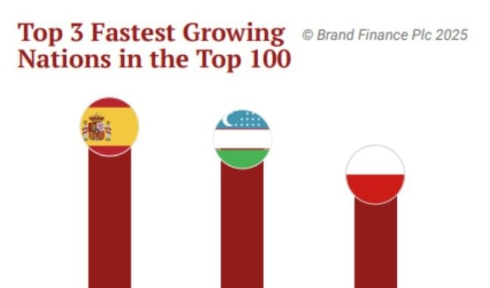
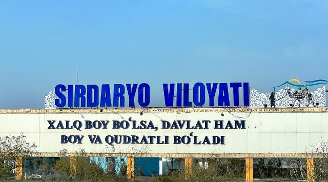

Energetika mustaqilligi va "Yashil" o‘tish:
2026-yilga kelib qayta tiklanuvchi energiya manbalarining ulushi 30% ga yetkazilmoqda. Energiya tanqisligi muammosini hal qilish uchun 3,2 GVt quvvatdagi eski, ko‘p energiya sarflaydigan bloklar konservatsiya qilinib, o‘rniga zamonaviy quyosh va shamol stansiyalari ishga tushirildi.
2026-yil 20-fevral
Transport va Logistika inqilobi:
Shaharlarni o'zaro bog'laydigan qo'shimcha 500 km tezyurar temir yo'llar qurilishi boshlandi. Viloyatlararo qatnovdagi vaqt yo'qotilishi va transport tanqisligi masalasi yangi besh yillik dastur orqali tizimli hal etilmoqda.
2026-yil 20-fevral
Mahalla infratuzilmasini rivojlantirish:
Mahallalar infratuzilmasiga 20 trillion so‘m (taxminan $1.7 mlrd) yo‘naltirildi. Endilikda ichki yo‘llar, ichimlik suvi va elektr tarmog‘idagi muammolar bevosita mahalla darajasida, "Mahallani rivojlantirish va jamiyatni yuksaltirish yili" doirasida hal qilinmoqda.
2026-yil 13-fevral
Moliyaviy mustaqillik va Soliq islohoti:
Tuman byudjetlarida QQSning bir qismi (Toshkentda 5%, viloyatlarda 20%) qoldiriladigan bo‘ldi. Mahalliy muammolarni hal qilish uchun markazdan mablag‘ kutish muammosi bartaraf etilib, hududlarga o‘z daromadidan infratuzilmani yaxshilash imkoni berildi.
2026-yil 13-fevral
Uy-joy va Ipoteka bozori:
Imtiyozli ipoteka kreditlari miqdori 15% ga oshirildi. Aholining uy-joyga bo‘lgan ehtiyojini qondirish uchun 23 trillion so‘m mablag‘ ajratildi va boshlang‘ich badalni subsidiyalash tizimi takomillashtirildi.
2026-yil 13-fevral
Raqamli infratuzilma va AI:
Toshkent, Buxoro va Farg‘onada 4 ta yirik ma’lumotlar markazi (Data Center) va superkompyuterlar ishga tushirildi. Internet tezligi va raqamli xizmatlar sifatidagi uzilishlar yangi texnologik bazalar hisobiga hal etildi.
2026-yil 13-fevral
Sud-huquq tizimidagi ixchamlashtirish:
2026-yil 1-yanvardan tumanlararo iqtisodiy sudlar tugatilib, viloyat markazlarida markazlashgan tizim tashkil etildi. Tadbirkorlarning sudma-sud sarson bo‘lishi kamaytirildi va odil sudlovdan foydalanish soddalashtirildi.
2026-yil 13-fevral
Qurilish sohasidagi o‘sish:
Qurilish ishlari hajmi 400 trillion so‘mga ($32.7 mlrd) yetishi kutilmoqda. Sifatsiz qurilishlar muammosini hal qilish uchun hududiy muhandislik kompaniyalari ustidan nazorat kuchaytirildi.
2026-yil 13-fevral
Sanoatning yangi texnologik darajasi:
Qiymati $52 milliardlik 782 ta yangi sanoat va infratuzilma loyihalari ishga tushmoqda. Xomashyo eksportidan tayyor mahsulot ishlab chiqarishga o‘tish orqali qo‘shilgan qiymat zanjiri kengaytirildi.
2026-yil 13-fevral
Davlat ijtimoiy sug‘urtasining yangi tizimi joriy etildi.
Homiladorlik va tug‘ish nafaqalari endi inson omilisiz, proaktiv shaklda (avtomatik) to‘lanadigan bo‘ldi.
2026-yil 13-fevral
Korrupsiyaga qarshi "Favqulodda holat":
2026-yil korrupsiyaga qarshi kurashda "favqulodda holat" yili deb e'lon qilindi. Barcha idoralarda komplayens-nazorat xizmati va Hisob palatasining doimiy vakili faoliyati yo‘lga qo‘yildi.
2026-yil 13-fevral
"Yashil" shahar va Urbanizatsiya :
45 ta yirik aglomeratsiya hududlari belgilab olindi. Shaharlarning tartibsiz kengayishi va qishloq xo‘jaligi yerlarining kamayib ketishi muammosi "Sustainable City" platformasi orqali hal qilinmoqda.
2026-yil 13-fevralMakroiqtisodiy barqarorlik :
Inflyatsiya darajasini 7% gacha tushirish maqsad qilingan. Pul-kredit siyosatining 2026–2028 yillarga mo‘ljallangan strategiyasi doirasida narxlar barqarorligi ta’minlanmoqda.
2026-yil 13-fevral
Sanoat zonalarida kasbga qayta tayyorlash markazlari va biznes-inkubatorlar ochildi.
Ishsizlik va malakali kadrlar yetishmovchiligi muammosi ta’lim va ishlab chiqarish integratsiyasi orqali yechilmoqda.
2026-yil 13-fevral
O‘zbekiston Yevropa va Markaziy Osiyo mintaqasida iqtisodiy o‘sish bo‘yicha top-3 likka kirdi.
Oltin narxlarining qulayligi va eksport geografiyasining kengayishi hisobiga tashqi qarzning YAIMga nisbati barqaror saqlanmoqda.
2026-yil 13-fevral
Quyosh panellarini o'rnatgan aholiga 209 mlrd so'm subsidiya to'landi
2025 yilda O'zbekistonda quyosh panellari o'rnatgan jismoniy shaxlarga 209 mlrd so'mdan ortiq davlat subsidiyasi ajratildi.
2026-yil 20-fevral
Sirdaryodagi infratuzilma muammolarini hal qilish uchun 100 mln dollar ajratiladi
Prezident topshirig'iga ko'ra bu mablag'lar viloyatdagi elektr, yo'l, suv, kanalizatsiya va boshqa infratuzilma bilan bog'liq masalalarni hal qilish uchun ishlatiladi.
2026-yil 20-fevral
Axoli yashash joylariga yaqin "заправка" lar ko'chiriladi
Fuqarolar xavfsizligini ta'minlash maqsadida talablarga javob bermaydigan yonilg'i quyish shaxobchalari 2026 yil 1 aprelgacha boshqa hududlarga ko'chirilishi mumkin.
2026-yil 20-fevral
Toshkentdan Chorvoqqa yangi avtomobil yo'li quriladi
Transport vazirligi Toshkent va Chorvoq orasida zamonaviy avtomobil yo'li qurilishini boshlashini ma'lum qildi
2026-yil 20-fevral
Eng yaxshi mikrokredit va atokredit stavkalarini qaysi banklar taklif qilmoqda?
Markaziy bank 2026 yil 16 fevral holatiga ko'ra, tijorat banklari tomonidan aholiga ajratilgan mikroqarz va avtokreditlar bo'yicha o'rtacha foiz stavkalarini e'lon qildi.
2026-yil 20-fevral
OTM bitiruvchilarini ishga olgan tadbirkorlarga 5 mlrd so'mgacha imtiyozli kredit beriladi
Tadbirkorlarga imtyozli kredit ajratishda har bir mlrd so'mgacha bo'lgan mablag' uchun kamida 1 nafar bitiruvchini ishga olish sharti qo'yiladi.
2026-yil 20-fevral
Kredit olishni o'ziga o'zi taqiqlash xizmati: u qanday ishlaydi?
O'zbekistonda kredit bilan bog'liq firibgarlik va kiberjinoyatlar ko'paygani uchun jismoniy shaxslar "o'ziga o'zi kredit olishni taqiqlash" xizmati joriy etildi.
2026-yil 20-fevral
O'zbekistonda pensiyadan ushlab qolishlariga chegara qo'yiladi
Pensionerlarning qarz undirishdagi himoyasi kuchaytrilmoqda. Endi pensiyaning yarmidan ortig'ini ushlab qolish mumkin emas, qoladigan summa esa minimal iste'mol harajatlaridan past bo'lmaydi.
2026-yil 20-fevral
Issiqxona xo'jaliklariga soliq imtyozlari berildi
Endi issiqxona xo'jaliklari 2028 yil ohirigacha mavjud soliq qarzini foizsiz to'lash imkoniga ega bo'ladi. Shuningdek , ular uchun ijtimoiy soliq stavkasi 3 yilga 1 foizsiz darajada belgilandi .
2026-yil 20-fevral
"Dekret" pulini hisoblashda sug'urta staji inobatga olinadi
Homiladorlik va tug'ish nafaqalari endi ish stajiga mutanosib koeffitsiyentalar asosida hisoblanib, sug'urta tizimiga bog'landi.
2026-yil 20-fevral